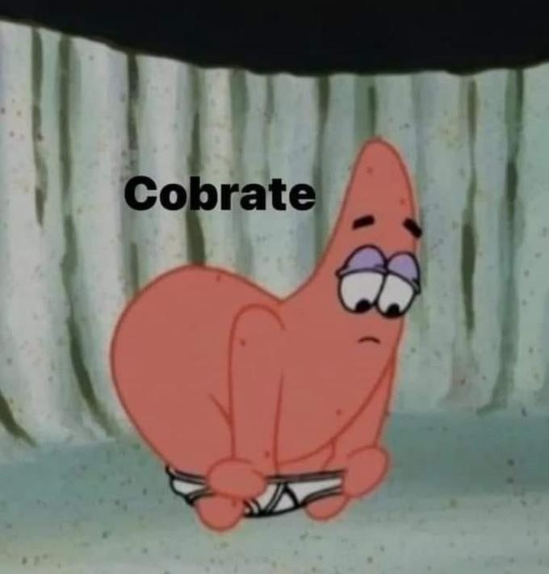

Card

Imagen fuera decontexto
Nose que poner aqui
Hola mundo desde, nose ionic XD
Hola
Hola otra vez
este es otro tipo de carta que Ionic nos ofrece en su documentacion
Boton 1
Boton 2
Last card
Ultima carta por si no saben ingleishon
Here's a small text description for the card content. Nothing more, nothing less.